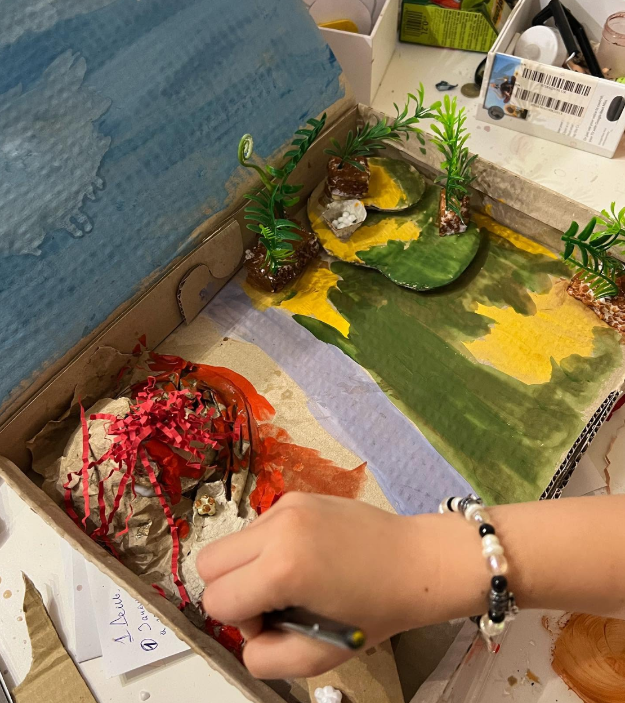
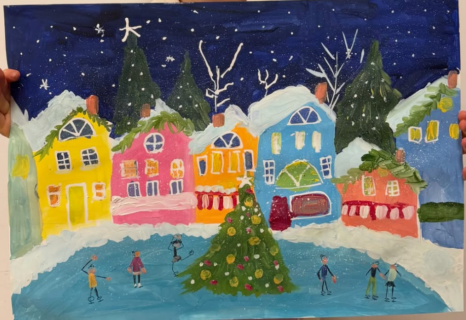
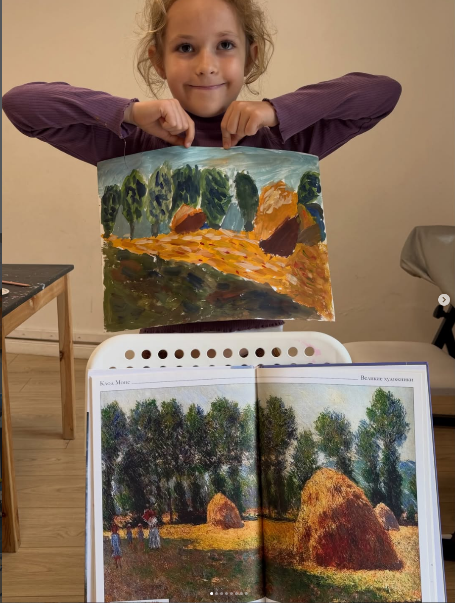
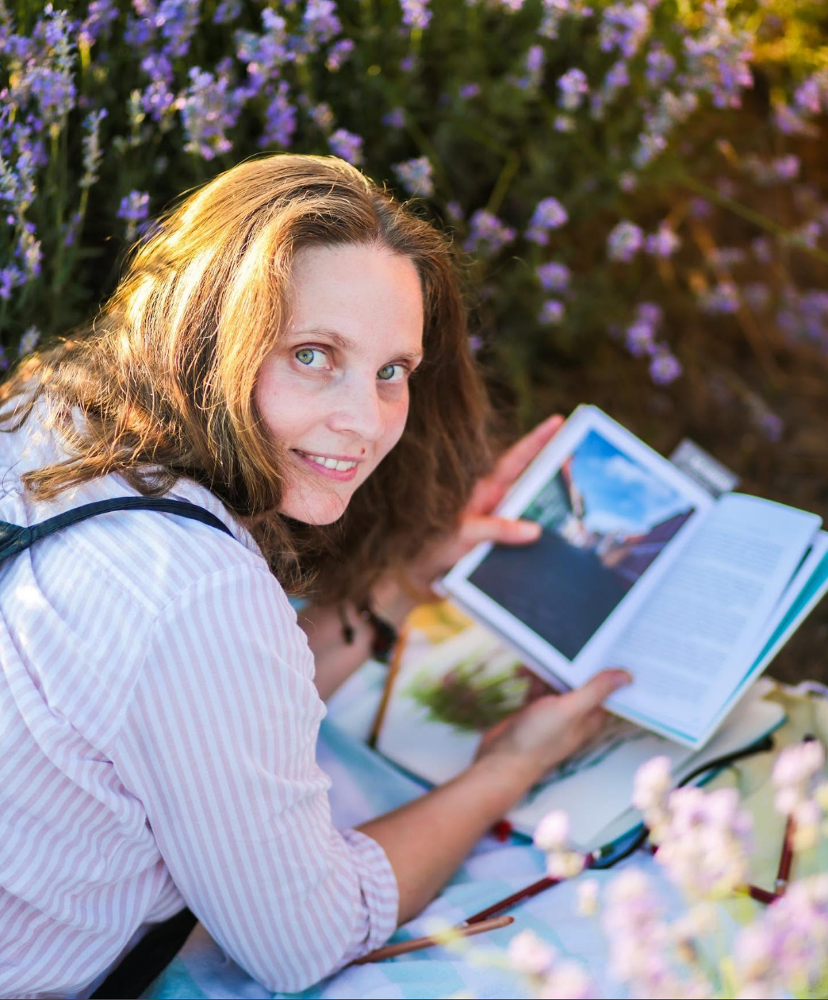

Рисование
Мини-группы для детей разных возрастов.
Маленькая мастерская в Варне
Рисуем. Строим.
Придумываем. Создаём.
Бумага, краски и пространство для собственных идей.


01 / о мастерской
Мы начинаем с истории, изображения или сюжета. Дети пробуют цвет, бумагу и разные материалы, осваивают художественные принципы — а затем находят собственное решение.
02 / занятия
Четыре способа исследовать форму, цвет и сюжет.
Мини-группы для детей разных возрастов.
Проекты из бумаги и разных материалов.
Строим из бумаги и картона.
Творческие занятия для младших детей, 4+.
03 / как проходят занятия
Учитель задаёт основу композиции и предлагает небольшую палитру. Дети смешивают краски, ищут нужные оттенки и придумывают свои детали — даже когда тема у всех одна.

04 / расписание
Мини-группы до 8 детей.
рисование
рисование
рисование
рисование
рисование
рисование
архитектурные проекты из бумаги и картона
Примерно 8–10 летобъёмное моделирование из бумаги примерно 7–8 лет
рисование примерно 6–8 лет
рисование
мастерилки 4+
Возраст по субботам — ориентир, а не строгое условие записи. Подскажем подходящую группу.
05 / из мастерской


06 / человек за мастерской
Руководитель Tiny Art Club